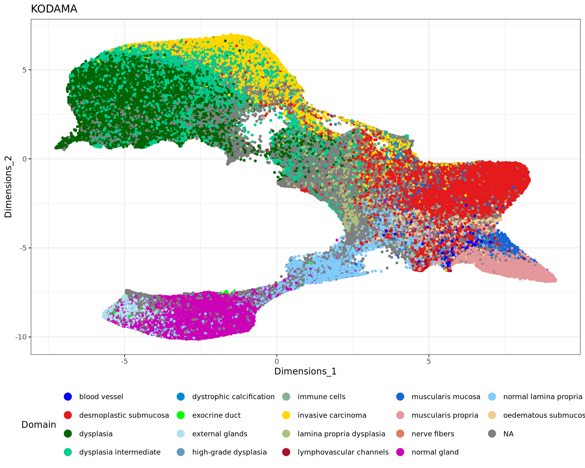
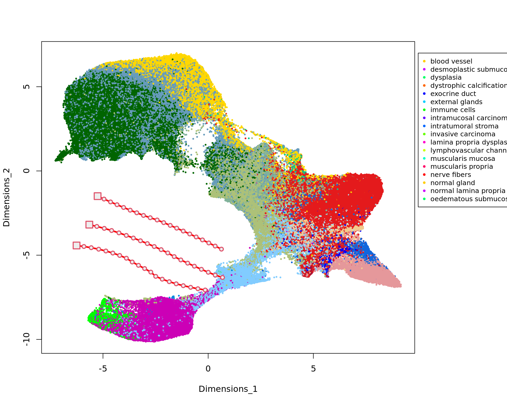
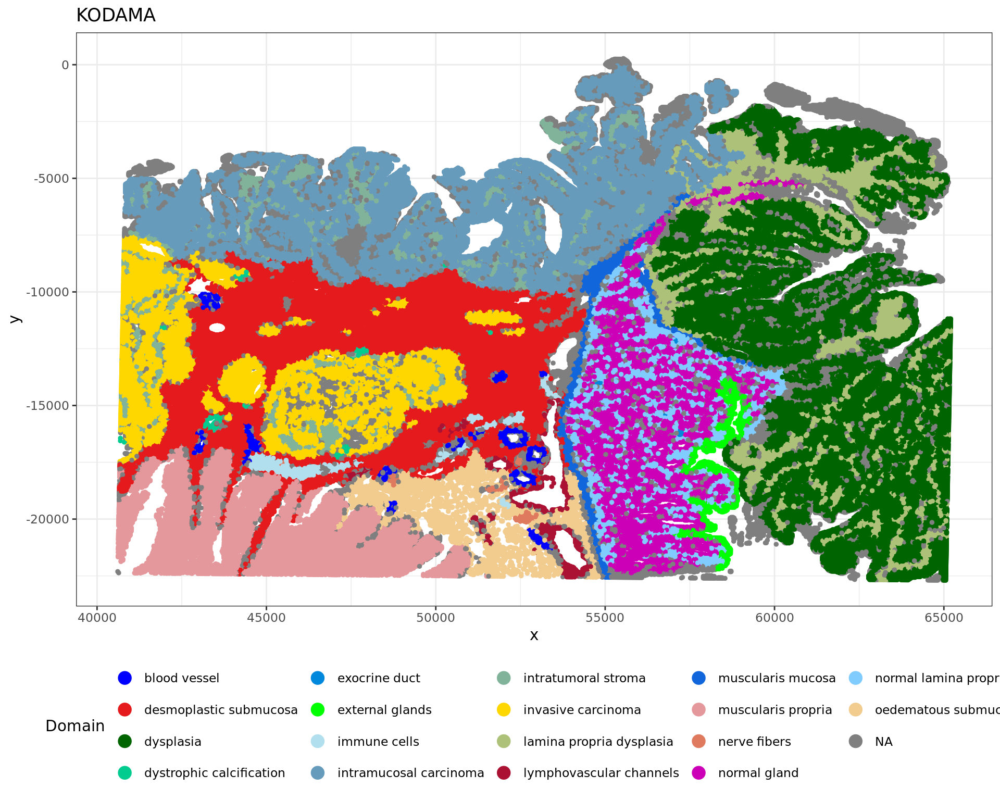
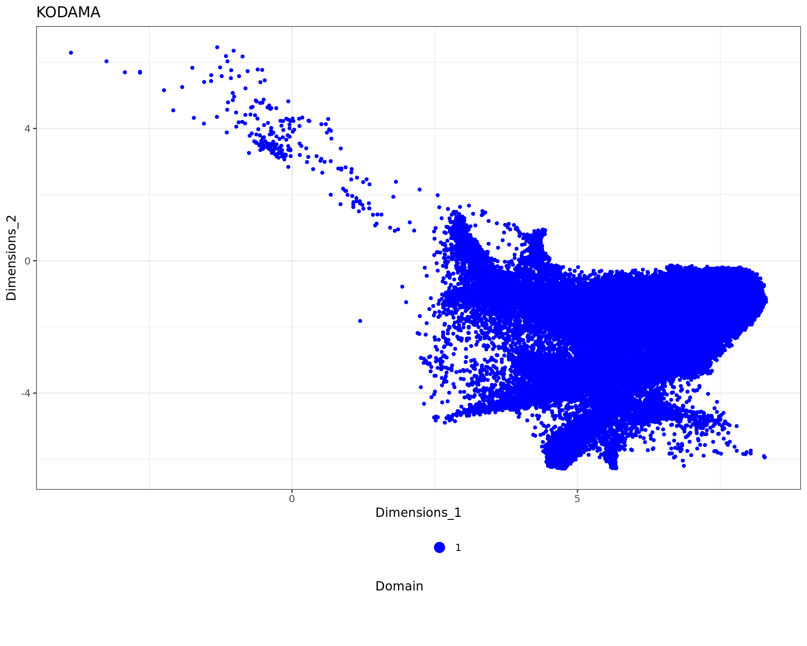
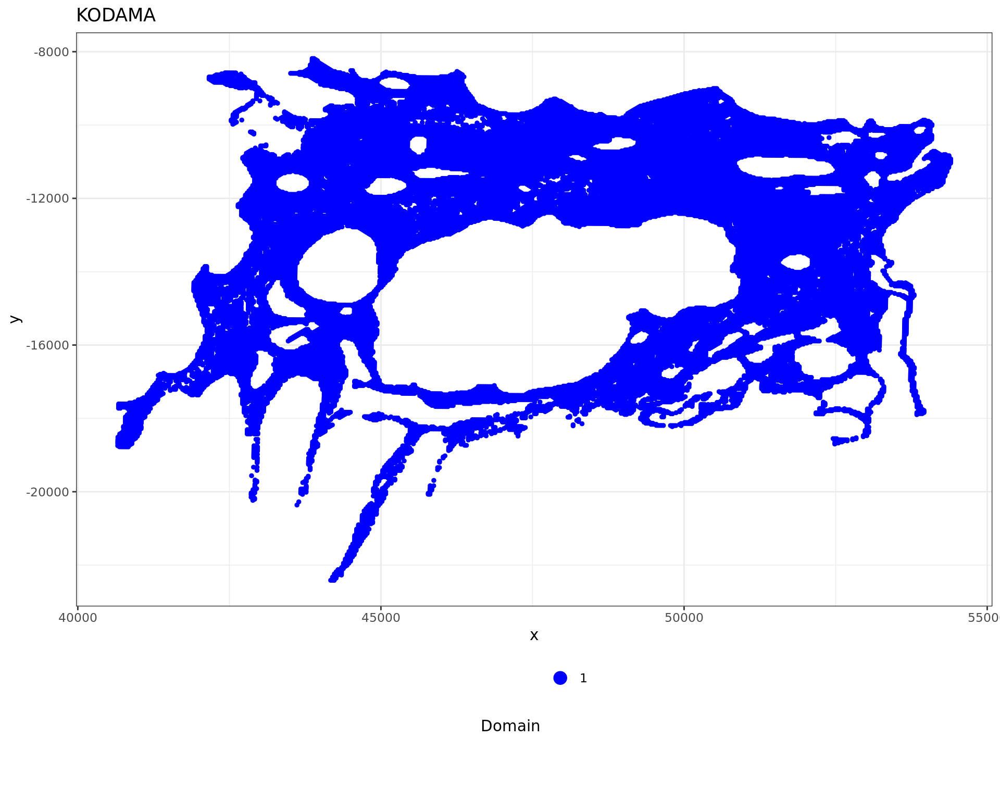
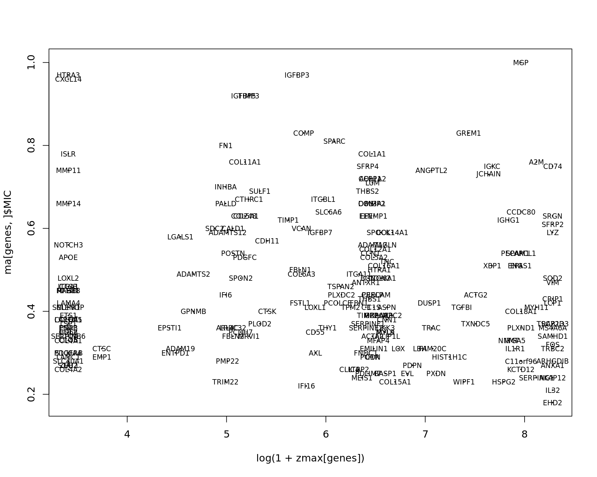
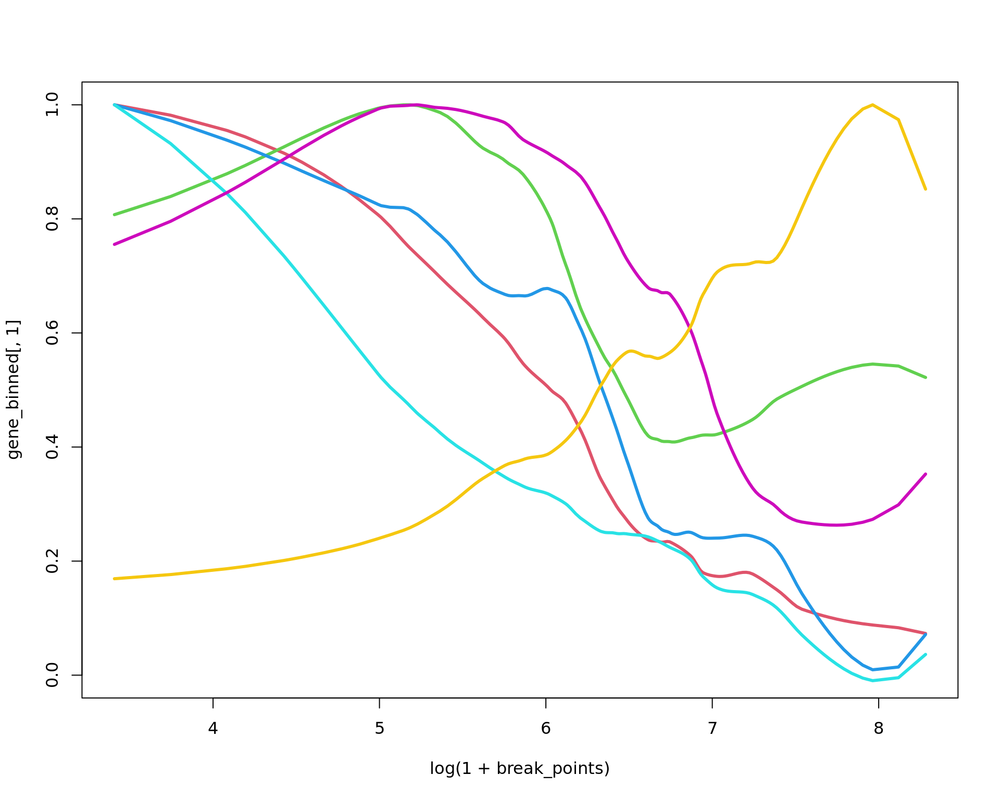

Visium HD: colonrectal cancer
<<<<<<< HEAD Last updated: 2025-04-14 ======= Last updated: 2025-03-08 >>>>>>> d89baaa7bfc3bffd762b0db8bac45eeb05443b97
Checks: 6 1
Knit directory: KODAMA-Analysis/
This reproducible R Markdown analysis was created with workflowr (version 1.7.1). The Checks tab describes the reproducibility checks that were applied when the results were created. The Past versions tab lists the development history.
The R Markdown file has unstaged changes. To know which version of
the R Markdown file created these results, you’ll want to first commit
it to the Git repo. If you’re still working on the analysis, you can
ignore this warning. When you’re finished, you can run
wflow_publish to commit the R Markdown file and build the
HTML.
Great job! The global environment was empty. Objects defined in the global environment can affect the analysis in your R Markdown file in unknown ways. For reproduciblity it’s best to always run the code in an empty environment.
The command set.seed(20240618) was run prior to running
the code in the R Markdown file. Setting a seed ensures that any results
that rely on randomness, e.g. subsampling or permutations, are
reproducible.
Great job! Recording the operating system, R version, and package versions is critical for reproducibility.
Nice! There were no cached chunks for this analysis, so you can be confident that you successfully produced the results during this run.
Great job! Using relative paths to the files within your workflowr project makes it easier to run your code on other machines.
<<<<<<< HEAD Repository version: 5f5ac63 ======= Repository version: 7de0c74 >>>>>>> d89baaa7bfc3bffd762b0db8bac45eeb05443b97
Great! You are using Git for version control. Tracking code development and connecting the code version to the results is critical for reproducibility.
The results in this page were generated with repository version <<<<<<< HEAD 5f5ac63. ======= 7de0c74. >>>>>>> d89baaa7bfc3bffd762b0db8bac45eeb05443b97 See the Past versions tab to see a history of the changes made to the R Markdown and HTML files.
Note that you need to be careful to ensure that all relevant files for
the analysis have been committed to Git prior to generating the results
(you can use wflow_publish or
wflow_git_commit). workflowr only checks the R Markdown
file, but you know if there are other scripts or data files that it
depends on. Below is the status of the Git repository when the results
were generated:
Ignored files:
Ignored: .RData
Ignored: .Rhistory
Ignored: .Rproj.user/
Untracked files:
Untracked: KODAMA.svg
<<<<<<< HEAD
Untracked: analysis/singlecell_datamatrix.Rmd
Untracked: analysis/singlecell_seurat.Rmd
=======
Untracked: analysis/old_DLPFC.Rmd
>>>>>>> d89baaa7bfc3bffd762b0db8bac45eeb05443b97
Untracked: code/Acinar_Cell_Carcinoma.ipynb
Untracked: code/Adenocarcinoma.ipynb
Untracked: code/Adjacent_normal_section.ipynb
Untracked: code/DLFPC_preprocessing.R
Untracked: code/DLPFC - BANKSY.R
Untracked: code/DLPFC - BASS.R
Untracked: code/DLPFC - BAYESPACE.R
Untracked: code/DLPFC - Nonspatial.R
Untracked: code/DLPFC - PRECAST.R
Untracked: code/DLPFC_comparison.R
Untracked: code/DLPFC_results_analysis.R
Untracked: code/MERFISH - BANKSY.R
Untracked: code/MERFISH - BASS.R
Untracked: code/MERFISH - BAYESPACE.R
Untracked: code/MERFISH - Nonspatial.R
Untracked: code/MERFISH - PRECAST.R
Untracked: code/MERFISH_comparison.R
Untracked: code/MERFISH_results_analysis.R
Untracked: code/VisiumHD-CRC.ipynb
<<<<<<< HEAD
Untracked: code/VisiumHDassignment.py
Untracked: code/deep learning code DLPFC.R
Untracked: code/save tiles.py
=======
Untracked: code/deep learning code DLPFC.R
Untracked: code/save tiles.py
Untracked: data/Adenocarcinoma.csv
>>>>>>> d89baaa7bfc3bffd762b0db8bac45eeb05443b97
Untracked: data/Annotations/
Untracked: data/DLFPC-Br5292-input.RData
Untracked: data/DLFPC-Br5595-input.RData
Untracked: data/DLFPC-Br8100-input.RData
Untracked: data/DLPFC-general.RData
Untracked: data/MERFISH-input.RData
<<<<<<< HEAD
=======
Untracked: data/spots_classification_ALL.csv
Untracked: data/spots_classification_Acinar_Cell_Carcinoma.csv
Untracked: data/spots_classification_IF.csv
Untracked: data/spots_classification_Normal_prostate.csv
>>>>>>> d89baaa7bfc3bffd762b0db8bac45eeb05443b97
Untracked: data/trajectories.RData
Untracked: data/trajectories_VISIUMHD.RData
Untracked: output/BANSKY-results.RData
Untracked: output/BASS-results.RData
Untracked: output/BayesSpace-results.RData
Untracked: output/CRC-image.RData
Untracked: output/CRC-image2.RData
Untracked: output/CRC.png
Untracked: output/CRC2.png
Untracked: output/CRC7.png
Untracked: output/CRC8.png
Untracked: output/CRC_boxplot.png
Untracked: output/CRC_boxplot.svg
<<<<<<< HEAD
Untracked: output/CRC_boxplot2.svg
=======
>>>>>>> d89baaa7bfc3bffd762b0db8bac45eeb05443b97
Untracked: output/CRC_linee.svg
Untracked: output/DL.RData
Untracked: output/DLFPC-All-2.RData
Untracked: output/DLFPC-All.RData
Untracked: output/DLFPC-Br5292.RData
Untracked: output/DLFPC-Br5595.RData
Untracked: output/DLFPC-Br8100.RData
<<<<<<< HEAD
Untracked: output/DLFPC-variablesXdeeplearning.RData
=======
>>>>>>> d89baaa7bfc3bffd762b0db8bac45eeb05443b97
Untracked: output/DLPFC-BANSKY-results.RData
Untracked: output/DLPFC-BASS-results.RData
Untracked: output/DLPFC-BayesSpace-results.RData
Untracked: output/DLPFC-Nonspatial-results.RData
Untracked: output/DLPFC-PRECAST-results.RData
<<<<<<< HEAD
Untracked: output/DLPFC_all_cluster.svg
Untracked: output/DLPFCpathway.RData
=======
Untracked: output/DLPFC1.svg
Untracked: output/DLPFC_all_cluster.svg
>>>>>>> d89baaa7bfc3bffd762b0db8bac45eeb05443b97
Untracked: output/Figure 1 - boxplot.pdf
Untracked: output/Figure 2 - DLPFC 10.pdf
Untracked: output/Figures/
Untracked: output/KODAMA-results.RData
Untracked: output/KODAMA_DLPFC_All_original.svg
Untracked: output/KODAMA_DLPFC_Br5595.svg
Untracked: output/KODAMA_DLPFC_Br5595_slide.svg
<<<<<<< HEAD
Untracked: output/Loupe.csv
=======
>>>>>>> d89baaa7bfc3bffd762b0db8bac45eeb05443b97
Untracked: output/MERFISH-BANSKY-results.RData
Untracked: output/MERFISH-BASS-results.RData
Untracked: output/MERFISH-BayesSpace-results.RData
Untracked: output/MERFISH-KODAMA-results.RData
<<<<<<< HEAD
Untracked: output/MERFISH-Nonspatial-results.RData
Untracked: output/MERFISH-PRECAST-results.RData
Untracked: output/MERFISH.RData
Untracked: output/Nonspatial-results.RData
Untracked: output/Prostate-GSEA.csv
Untracked: output/Prostate-KODAMA.RData
Untracked: output/Prostate-trajectory.csv
Untracked: output/Prostate.RData
Untracked: output/VisiumHD-RNA.RData
Untracked: output/VisiumHD-genes.pdf
Untracked: output/VisiumHD.RData
Untracked: output/boh.svg
Untracked: output/desmoplastic_distance_carcinoma.csv
=======
Untracked: output/MERFISH-NONSPATIAL-results.RData
Untracked: output/MERFISH-PRECAST-results.RData
Untracked: output/MERFISH.RData
Untracked: output/Nonspatial-results.RData
Untracked: output/Prostate.RData
Untracked: output/RGB_DLPFC.png
Untracked: output/VisiumHD.RData
Untracked: output/VisiumHD3.RData
>>>>>>> d89baaa7bfc3bffd762b0db8bac45eeb05443b97
Untracked: output/image.RData
Untracked: output/pp.RData
Untracked: output/pp2.RData
Untracked: output/pp3.RData
Untracked: output/pp4.RData
Untracked: output/pp5.RData
Untracked: output/prostate1.svg
Untracked: output/prostate2.svg
Untracked: output/prostate3.svg
<<<<<<< HEAD
Untracked: output/subclusters1.csv
Untracked: output/subclusters2.csv
Untracked: output/subclusters3.csv
Untracked: output/tight_boundary.geojson
Untracked: output/trajectory.csv
=======
Untracked: output/prostate4.svg
Untracked: output/prostate5.svg
Untracked: output/prostate6.svg
Untracked: output/prostate7.svg
Untracked: output/tight_boundary.geojson
>>>>>>> d89baaa7bfc3bffd762b0db8bac45eeb05443b97
Unstaged changes:
Deleted: analysis/D1.Rmd
Deleted: analysis/DLPFC-12.Rmd
Deleted: analysis/DLPFC-4.Rmd
Modified: analysis/DLPFC.Rmd
Deleted: analysis/DLPFC1.Rmd
Deleted: analysis/DLPFC10.Rmd
Deleted: analysis/DLPFC2.Rmd
Deleted: analysis/DLPFC3.Rmd
Deleted: analysis/DLPFC4.Rmd
Deleted: analysis/DLPFC5.Rmd
Deleted: analysis/DLPFC6.Rmd
Deleted: analysis/DLPFC7.Rmd
Deleted: analysis/DLPFC8.Rmd
Deleted: analysis/DLPFC9.Rmd
Deleted: analysis/Du1.Rmd
Deleted: analysis/Du10.Rmd
Deleted: analysis/Du11.Rmd
Deleted: analysis/Du12.Rmd
Deleted: analysis/Du13.Rmd
Deleted: analysis/Du14.Rmd
Deleted: analysis/Du15.Rmd
Deleted: analysis/Du16.Rmd
Deleted: analysis/Du17.Rmd
Deleted: analysis/Du18.Rmd
Deleted: analysis/Du19.Rmd
Deleted: analysis/Du2.Rmd
Deleted: analysis/Du20.Rmd
Deleted: analysis/Du3.Rmd
Deleted: analysis/Du4.Rmd
Deleted: analysis/Du5.Rmd
Deleted: analysis/Du6.Rmd
Deleted: analysis/Du7.Rmd
Deleted: analysis/Du8.Rmd
Deleted: analysis/Du9.Rmd
Modified: analysis/Giotto.Rmd
Modified: analysis/MERFISH.Rmd
Deleted: analysis/MERFISH1a (copy).Rmd
Deleted: analysis/MERFISH1a.Rmd
Deleted: analysis/MERFISH1b (copy).Rmd
Deleted: analysis/MERFISH1b.Rmd
Deleted: analysis/MERFISH2a (copy).Rmd
Deleted: analysis/MERFISH2a.Rmd
Deleted: analysis/MERFISH2b (copy).Rmd
Deleted: analysis/MERFISH2b.Rmd
Deleted: analysis/MERFISH3a (copy).Rmd
Deleted: analysis/MERFISH3a.Rmd
Deleted: analysis/MERFISH3b (copy).Rmd
Deleted: analysis/MERFISH3b.Rmd
Deleted: analysis/MERFISH4a (copy).Rmd
Deleted: analysis/MERFISH4a.Rmd
Deleted: analysis/MERFISH4b (copy).Rmd
Deleted: analysis/MERFISH4b.Rmd
Modified: analysis/Prostate.Rmd
Deleted: analysis/STARmap.Rmd
<<<<<<< HEAD
Modified: analysis/Seurat.Rmd
Deleted: analysis/Simulation.Rmd
Deleted: analysis/Single-cell.Rmd
Modified: analysis/SpatialExperiment.Rmd
Modified: analysis/VisiumHD.Rmd
Modified: code/VisiumHD_CRC_download.sh
Deleted: data/Pathology.csv
Deleted: data/merfish.Rmd
Deleted: data/vis.R
=======
Modified: analysis/VisiumHD.Rmd
Modified: code/VisiumHD_CRC_download.sh
Deleted: data/Pathology.csv
>>>>>>> d89baaa7bfc3bffd762b0db8bac45eeb05443b97
Note that any generated files, e.g. HTML, png, CSS, etc., are not included in this status report because it is ok for generated content to have uncommitted changes.
These are the previous versions of the repository in which changes were
made to the R Markdown (analysis/VisiumHD.Rmd) and HTML
(docs/VisiumHD.html) files. If you’ve configured a remote
Git repository (see ?wflow_git_remote), click on the
hyperlinks in the table below to view the files as they were in that
past version.
| File | Version | Author | Date | Message |
|---|---|---|---|---|
| html | 5b7dd63 | Stefano Cacciatore | 2025-01-10 | Build site. |
| Rmd | 86be707 | Stefano Cacciatore | 2025-01-10 | Start my new project |
| Rmd | 7bba919 | Stefano Cacciatore | 2025-01-09 | Start my new project |
| html | a423e5f | Stefano Cacciatore | 2024-09-04 | Build site. |
| Rmd | b0a97fe | Stefano Cacciatore | 2024-09-04 | Start my new project |
| html | 9bdaa70 | Stefano Cacciatore | 2024-09-04 | Build site. |
| Rmd | ca72951 | Stefano Cacciatore | 2024-09-04 | Start my new project |
| html | 098b08e | Stefano Cacciatore | 2024-09-04 | Build site. |
| Rmd | eb8066e | Stefano Cacciatore | 2024-09-04 | Start my new project |
| html | 0010f3c | Stefano Cacciatore | 2024-09-04 | Build site. |
| Rmd | 3f515c0 | Stefano Cacciatore | 2024-09-04 | Start my new project |
| html | 51b0452 | Stefano Cacciatore | 2024-09-03 | Build site. |
| Rmd | c257b0e | Stefano Cacciatore | 2024-09-03 | Start my new project |
| Rmd | 22e2ac6 | Stefano Cacciatore | 2024-08-26 | Start my new project |
| html | d1192e9 | Stefano Cacciatore | 2024-08-12 | Build site. |
| Rmd | 5ef8148 | Stefano Cacciatore | 2024-08-12 | Start my new project |
| html | 3374e66 | Stefano Cacciatore | 2024-08-06 | Build site. |
| html | 35ce733 | Stefano Cacciatore | 2024-08-03 | Build site. |
| html | 82fe167 | Stefano Cacciatore | 2024-07-24 | Build site. |
| Rmd | b422e43 | Stefano Cacciatore | 2024-07-24 | Start my new project |
| html | 6f7daac | Stefano Cacciatore | 2024-07-19 | Build site. |
| Rmd | 5b97082 | tkcaccia | 2024-07-15 | updates |
| Rmd | 7be8f59 | tkcaccia | 2024-07-15 | updates |
| html | 7be8f59 | tkcaccia | 2024-07-15 | updates |
| Rmd | 79f73a2 | GitHub | 2024-07-14 | Update VisiumHD.Rmd |
| html | f8ca54a | tkcaccia | 2024-07-14 | update |
| html | d04c1e7 | GitHub | 2024-07-08 | Update VisiumHD.html |
| html | 754c8bf | GitHub | 2024-07-04 | Update VisiumHD.html |
| html | ee4ee17 | GitHub | 2024-06-19 | Add files via upload |
| Rmd | 615fc05 | GitHub | 2024-06-19 | Add files via upload |
Introduction
The recently released VisiumHD platform by 10x Genomics significantly improves spatial transcriptomics resolution by reducing the spot size from 55 µm to an edge length of just 2 µm. This advancement eliminates gaps between spots, enabling truly gap-free and bias-free single-cell resolution. The high-density array allows for flexible data analysis at multiple resolutions, enabling researchers to tailor spatial granularity to specific biological questions. In the following analysis, we applied KODAMA to data at an 8 µm resolution.
Loading and Preprocessing Data
The dataset can be downloaded using the following script: VisiumHD_CRC_download.sh. This script provides access to the raw data, which will be preprocessed and analyzed in the subsequent steps of our pipeline.
The dataset will be then loaded in the R environment using the Seurat pipeline.
library("ggplot2")
library("patchwork")
library("dplyr")
library("Seurat")
library("KODAMA")
library("KODAMAextra")
library("bigmemory")
localdir="../Colorectal/outs/"
object <- Load10X_Spatial(data.dir = localdir, bin.size = c(8))We perform quality control on a spatial transcriptomics dataset by removing low-quality spots with fewer than 100 UMIs, filtering out mitochondrial genes, and retaining genes expressed with at least 1 count in at least 0.5% of spots. The remaining high-quality genes are set as variable features for downstream analysis.
nCount_Spatial=colSums(object@assays$Spatial.008um$counts)
image=as.raster(object@images$slice1.008um@image)
save(image,file="output/CRC-image.RData")
#object@images$slice1.008um@scale.factors$hires
# plot(image,xlim=c(320,530),ylim=c(200,410))
# points(xy[,2]*0.007973422,nrow(image)-xy[,1]*0.007973422,pch=20)
#xy=as.matrix(GetTissueCoordinates(sp_obj)[,1:2])
#image=as.raster(imgData(object)$data[[1]])
#xy_sel=spatialCoords(spe_sub)
#xy_sel=xy_sel*scaleFactors(spe_sub)
#xy_sel[,2]=nrow(image)-xy_sel[,2]
sp_obj <- subset(
object,
subset = nCount_Spatial.008um > 100)
nCount_Spatial=colSums(sp_obj@assays$Spatial.008um$counts)
counts=sp_obj@assays$Spatial.008um$counts
is_mito <- grepl("(^MT-)|(^mt-)", rownames(counts))
counts <- counts[!is_mito,]
filter_genes_ncounts=1
filter_genes_pcspots=0.5
nspots <- ceiling(filter_genes_pcspots/100 * ncol(counts))
ix_remove <- rowSums(counts >= filter_genes_ncounts) < nspots
counts <- counts[!ix_remove,]
QCgenes <- rownames(counts)
VariableFeatures(sp_obj) = QCgenes
rm(counts)We prepare the filtered spatial transcriptomics data for dimensionality reduction using principal component analysis (PCA). We set the default assay, normalize the data, identify variable features, and scale the data. We then extract the tissue coordinates and we perform PCA using the filtered genes, storing the result as “pca.008um”. Finally, PCA is displayed in a scatterplot.
DefaultAssay(sp_obj) <- "Spatial.008um"
sp_obj <- NormalizeData(sp_obj)
sp_obj <- FindVariableFeatures(sp_obj)
sp_obj <- ScaleData(sp_obj)
xy=as.matrix(GetTissueCoordinates(sp_obj)[,1:2])
sp_obj <- RunPCA(sp_obj, reduction.name = "pca.008um")
dim(sp_obj)[1] 18085 428381plot(Seurat::Embeddings(sp_obj, reduction = "pca.008um"))
| Version | Author | Date |
|---|---|---|
| 5b7dd63 | Stefano Cacciatore | 2025-01-10 |
| 51b0452 | Stefano Cacciatore | 2024-09-03 |
| d1192e9 | Stefano Cacciatore | 2024-08-12 |
| 6f7daac | Stefano Cacciatore | 2024-07-19 |
| 7be8f59 | tkcaccia | 2024-07-15 |
KODAMA analysis
We performed the KODAMA analysis using as input the 50 principal components of PCA and using 10000 landmarks.
n.cores=8
sp_obj=RunKODAMAmatrix(sp_obj,
reduction = "pca.008um",
landmarks = 10000,
n.cores=n.cores,
seed = 543210)
config <- umap.defaults
config$n_threads = n.cores
config$n_sgd_threads = "auto"
sp_obj=RunKODAMAvisualization(sp_obj,method="UMAP",config=config)
kk_UMAP=Seurat::Embeddings(sp_obj, reduction = "KODAMA")Tissue annotation
The tissue was manually annotated using QuPath software and the annotations were save in Visium_HD_Human_Colon_Cancer_290325.geojson.
Using the script VisiumHDassignment.py the annotations saved as *.geojson were assigned to the Visium spots and saved in spots_classification_VisiumHD.csv.
rr=read.csv("data/Annotations/spots_classification_VisiumHD.csv",sep=",")
=======
n.cores=8
sp_obj=RunKODAMAmatrix(sp_obj,
reduction = "pca.008um",
FUN= "fastpls" ,
landmarks = 10000,
splitting = 300,
ncomp = 50,
spatial.resolution = 0.3,
n.cores=n.cores,
seed = 543210)
Calculating Network
Calculating Network spatial
socket cluster with 8 nodes on host 'localhost'
================================================================================
Finished parallel computation
[1] "Calculation of dissimilarity matrix..."
================================================================================
config <- umap.defaults
config$n_threads = n.cores
config$n_sgd_threads = "auto"
sp_obj=RunKODAMAvisualization(sp_obj,method="UMAP",config=config)
#sp_obj <- RunKODAMAmatrix(sp_obj, reduction = "pca.008um",
# FUN= "PLS" ,
# landmarks = 10000,
# splitting = 100,
# f.par.pls = 50,
# spatial.resolution = 0.4,
# n.cores=8)
# print("KODAMA finished")
# config=umap.defaults
# config$n_threads = 8
# config$n_sgd_threads = "auto"
# sp_obj <- RunKODAMAvisualization(sp_obj, method = "UMAP",config=config)
kk_UMAP=Seurat::Embeddings(sp_obj, reduction = "KODAMA")
save(kk_UMAP,xy,file="output/VisiumHD.RData")
load("output/VisiumHD.RData")
rr=read.csv("data/spots_classification_ALL.csv",sep=",")
>>>>>>> d89baaa7bfc3bffd762b0db8bac45eeb05443b97
ss=strsplit(rr[,2],":")
ss=unlist(lapply(ss, function(x) x[2]))
ss=strsplit(ss,",")
ss=unlist(lapply(ss, function(x) x[1]))
ss=gsub("\"","",ss)
rr[,2]=ss
n=ave(1:length(rr[,1]), rr[,1], FUN = seq_along)
rr=rr[n==1,]
rownames(rr)=rr[,1]
rr=rr[rownames(kk_UMAP),]
rr[,2]=substring(rr[,2],2)
<<<<<<< HEAD
=======
>>>>>>> d89baaa7bfc3bffd762b0db8bac45eeb05443b97
table(rr[,"classification"])
blood vessel desmoplastic submucosa dysplasia
<<<<<<< HEAD
1969 55409 89290
dystrophic calcification exocrine duct external glands
488 158 3108
immune cells intramucosal carcinoma intratumoral stroma
2713 69214 13336
invasive carcinoma lamina propria dysplasia lymphovascular channels
37283 26834 1505
muscularis mucosa muscularis propria nerve fibers
4785 18023 457
normal gland normal lamina propria oedematous submucosa
30199 16502 5865
=======
1969 63892 89367
dysplasia intermediate dystrophic calcification exocrine duct
69167 488 158
external glands high-grade dysplasia immune cells
3108 815 2713
invasive carcinoma lamina propria dysplasia lymphovascular channels
37627 10271 1493
muscularis mucosa muscularis propria nerve fibers
4769 18023 457
normal gland normal lamina propria oedematous submucosa
30196 16512 5877 library(ggplot2)
cols=sample(rainbow(15))
labels=as.factor(rr[,"classification"])
<<<<<<< HEAD
cols_tissue <- c("#0000ff", "#e41a1c", "#006400", "#00cc8f" ,"#0088dd",
"#00ff00", "#b2dfee","#669bbc", "#81b29a", "#ffd700",
"#adc178", "#aa1133", "#1166dc", "#e5989b", "#e07a5f",
"#cc00b6", "#81ccff", "#f2cc8f","#e0aa5f","#33b233", "#aa228f","#aa7a6f")
df <- data.frame(kk_UMAP[,1:2], tissue=labels)
plot1 = ggplot(df, aes(Dimensions_1, Dimensions_2, color = tissue)) +labs(title="KODAMA") +
geom_point(size = 1) +
theme_bw() + theme(legend.position = "bottom")+
scale_color_manual("Domain", values = cols_tissue) +
guides(color = guide_legend(nrow = 4,
override.aes = list(size = 4)))
plot1Trajectory analysis
The function new_trajectory allows us to draw manually a trajectory into the KODAMA plot to identify the gradual changes in the gene expression. The trajectory were previously drew and saved in the file trajectories_VISIUMHD.RData.
par(xpd = T, mar = par()$mar + c(0,0,0,7))
data=sp_obj@assays$Spatial.008um$data[rownames(sp_obj@assays$Spatial.008um$scale.data),]
data=as.matrix(data)Warning in asMethod(object): sparse->dense coercion: allocating vector of size
6.4 GiBdata=t(data)
data=data[,-which(colMeans(data==0)>0.99)]load("data/trajectories_VISIUMHD.RData")
plot(kk_UMAP,cex=0.5,pch=20,col=cols_tissue[labels])
=======
cols_tissue <- c("#0000ff", "#e41a1c", "#006400", "#00cc8f" ,"#0088dd",
"#00ff00", "#b2dfee","#669bbc", "#81b29a", "#ffd700",
"#adc178", "#aa1133", "#1166dc", "#e5989b", "#e07a5f",
"#cc00b6", "#81ccff", "#f2cc8f","#e0aa5f","#33b233", "#aa228f","#aa7a6f")
df <- data.frame(kk_UMAP[,1:2], tissue=labels)
plot1 = ggplot(df, aes(Dimensions_1, Dimensions_2, color = tissue)) +labs(title="KODAMA") +
geom_point(size = 1) +
theme_bw() + theme(legend.position = "bottom")+
scale_color_manual("Domain", values = cols_tissue) +
guides(color = guide_legend(nrow = 4,
override.aes = list(size = 4)))
plot1
png("output/CRC.png",height = 2000,width = 2000)
plot1
dev.off()png
2 par(xpd = T, mar = par()$mar + c(0,0,0,7))
plot1=plot(kk_UMAP,cex=0.5,pch=20,col=cols_tissue[labels])
>>>>>>> d89baaa7bfc3bffd762b0db8bac45eeb05443b97
legend(max(kk_UMAP[,1])+0.05*dist(range(kk_UMAP[,1])), max(kk_UMAP[,2]),
levels(labels),
col = cols,
cex = 0.8,
pch=20)
<<<<<<< HEAD
mm1=new_trajectory (kk_UMAP,data = data,trace=tra1$xy)
mm2=new_trajectory (kk_UMAP,data = data,trace=tra2$xy)
mm3=new_trajectory (kk_UMAP,data = data,trace=tra3$xy)
Warning in asMethod(object): sparse->dense coercion: allocating vector of size
6.4 GiBdata=t(data)
mm1=new_trajectory (kk_UMAP,data = data,trace=tra1$xy)
mm2=new_trajectory (kk_UMAP,data = data,trace=tra2$xy)
mm3=new_trajectory (kk_UMAP,data = data,trace=tra3$xy)
| Version | Author | Date |
|---|---|---|
| 5b7dd63 | Stefano Cacciatore | 2025-01-10 |
traj=rbind(mm1$trajectory,
mm2$trajectory,
mm3$trajectory)
y=rep(1:20,3)The genes were were correlated with the trajectory using the Spearman correlation test.
ma=multi_analysis(traj,y,FUN="correlation.test",method="spearman")
ma=ma[order(as.numeric(ma$`p-value`)),]
colnames(ma)=c("Feature ","rho ","p-value ","FDR ")
knitr::kable(ma[1:10,],row.names=FALSE)| Feature | rho | p-value | FDR |
|---|---|---|---|
| LCN2 | -0.88 | 6.92e-21 | 6.94e-18 |
| SOD2 | -0.81 | 3.83e-15 | 1.92e-12 |
| CEBPD | -0.81 | 5.75e-15 | 1.92e-12 |
| CXCL3 | -0.77 | 7.34e-13 | 1.67e-10 |
| ID1 | -0.77 | 8.35e-13 | 1.67e-10 |
| IL32 | -0.75 | 4.17e-12 | 6.97e-10 |
| PI3 | -0.74 | 1.34e-11 | 1.91e-09 |
| CCL20 | -0.74 | 1.73e-11 | 2.17e-09 |
| CXCL1 | -0.74 | 2.16e-11 | 2.40e-09 |
| TRIM31 | -0.73 | 2.89e-11 | 2.90e-09 |
Validation of the results in the COAD TCGA cohort
The downregulation of CXCL3 across the progression of the carcinoma was validated using the RNAseq data of the COAD TGCA cohort. Clinical and gene expression data were downloaded from FireBrowse.
# install.packages("readxl")
library(readxl)
# Read in Clinical Data:
coad=read.csv("../TCGA/COAD/COAD.clin.merged.picked.txt",sep="\t",check.names = FALSE, row.names = 1)
=======
TRIM31
-0.83
1.41e-16
1.89e-13
CEMIP
-0.82
1.51e-15
7.47e-13
LYZ
0.82
1.67e-15
7.47e-13
COL3A1
0.80
1.05e-14
3.51e-12
C1QC
0.80
1.8e-14
4.45e-12
JCHAIN
0.80
1.99e-14
4.45e-12
DDIT4
-0.80
3.05e-14
5.84e-12
PLAUR
-0.79
8.77e-14
1.47e-11
MMP2
0.78
1.17e-13
1.75e-11
IGKC
0.78
1.32e-13
1.77e-11
A2M
0.77
8.76e-13
1.07e-10
C1QA
0.77
1.03e-12
1.11e-10
C1QB
0.77
1.07e-12
1.11e-10
ADM
-0.76
1.46e-12
1.39e-10
IGHG1
0.76
2.24e-12
2.00e-10
CD74
0.76
2.58e-12
2.16e-10
PRSS22
-0.76
3.06e-12
2.41e-10
RNF186
-0.75
5.15e-12
3.83e-10
EFNA1
-0.75
5.88e-12
4.14e-10
HILPDA
-0.75
6.77e-12
4.54e-10
RHPN2
-0.75
7.6e-12
4.85e-10
PFKFB4
-0.74
9.03e-12
5.50e-10
ITPKC
-0.74
9.73e-12
5.67e-10
ITGA2
-0.74
1.3e-11
7.26e-10
ANKRD37
-0.74
1.69e-11
9.05e-10
GGH
-0.73
2.48e-11
1.28e-09
COL6A2
0.73
3.87e-11
1.92e-09
MS4A7
0.73
5.1e-11
2.44e-09
VEGFA
-0.72
1e-10
4.62e-09
MS4A6A
0.72
1.23e-10
5.49e-09
miRseq Analysis:
Analysing miRseq Gene Expression Data from a Colerectal
Adenocarcinoma Cohort:
# install.packages("readxl")
library(readxl)
Prepare Clinical Data:
# Read in Clinical Data:
coad=read.csv("../TCGA/COAD/COAD.clin.merged.picked.txt",sep="\t",check.names = FALSE, row.names = 1)
>>>>>>> d89baaa7bfc3bffd762b0db8bac45eeb05443b97
coad <- as.data.frame(coad)
# Clean column names: replace dots with dashes & convert to uppercase
colnames(coad) = toupper(colnames(coad))
# Transpose the dataframe so that rows become columns and vice versa
coad = t(coad)
<<<<<<< HEAD
Prepare RNA-seq expression data:
=======
Prepare miRNA-seq expression data:
>>>>>>> d89baaa7bfc3bffd762b0db8bac45eeb05443b97
# Read RNA-seq expression data:
r = read.csv("../TCGA/COAD/COAD.rnaseqv2__illuminahiseq_rnaseqv2__unc_edu__Level_3__RSEM_genes_normalized__data.data.txt", sep = "\t", check.names = FALSE, row.names = 1)
# Remove the first row:
r = r[-1,]
# Convert expression data to numeric matrix format
temp = matrix(as.numeric(as.matrix(r)), ncol=ncol(r))
colnames(temp) = colnames(r)
rownames(temp) = rownames(r)
RNA = temp
# Transpose the matrix so that genes are rows and samples are columns
RNA = t(RNA)
Extract patient and tissue information from column
names:
tcgaID = list()
# Extract sample ID
tcgaID$sample.ID <- substr(colnames(r), 1, 16)
# Extract patient ID
tcgaID$patient <- substr(colnames(r), 1, 12)
# Extract tissue type
tcgaID$tissue <- substr(colnames(r), 14, 16)
tcgaID = as.data.frame(tcgaID)
Select Primary Solid Tumor tissue data
(“01A”):
sel=tcgaID$tissue == "01A"
tcgaID.sel = tcgaID[sel, ]
# Subset the RNA expression data to match selected samples
RNA.sel = RNA[sel, ]
Intersect patient IDs between clinical and RNA
data:
sel = intersect(tcgaID.sel$patient, rownames(coad))
# Subset the clinical data to include only selected patients:
coad.sel = coad[sel, ]
# Assign patient IDs as row names to the RNA data:
rownames(RNA.sel) = tcgaID.sel$patient
# Subset the RNA data to include only selected patients
RNA.sel = RNA.sel[sel, ]
Prepare labels for pathology stages:
<<<<<<< HEAD
The tumor samples were classified based on their T stage: -
t1, t2, & t3 as “low” -
t4, t4a, & t4b as “high” -
tis stages to NA
labelsTCGA = coad.sel[, "pathology_T_stage"]
labelsTCGA[labelsTCGA %in% c("t1", "t2", "t3", "tis")] = "low"
labelsTCGA[labelsTCGA %in% c("t4", "t4a", "t4b")] = "high"
table(labelsTCGA)
labelsTCGA
high low
38 242
=======
Classify stages t1, t2, &
t3 as “low”
Classify stages t4, t4a, &
t4b as “high”
Convert any tis stages to NA
labelsTCGA = coad.sel[, "pathology_T_stage"]
labelsTCGA[labelsTCGA %in% c("t1", "t2", "t3", "tis")] = "low"
labelsTCGA[labelsTCGA %in% c("t4", "t4a", "t4b")] = "high"
Log Transform the expression data for our selected gene
CXCL2:
CXCL2 <- log(1 + RNA.sel[, "CXCL2|2920"])
LCN2 <- log(1 + RNA.sel[,"LCN2|3934" ])
>>>>>>> d89baaa7bfc3bffd762b0db8bac45eeb05443b97
Boxplot to visualize the distribution of log transformed
gene expression by pathology stage:
colors=c("#0073c2bb","#efc000bb","#868686bb","#cd534cbb","#7aabdcbb","#003c67bb")
library(ggpubr)
<<<<<<< HEAD
gene.selected="CXCL3"
gene.selected.RNA=colnames(RNA.sel)[pmatch(gene.selected,colnames(RNA.sel))]
CXCL3 <- log(1 + RNA.sel[, gene.selected.RNA])
df=data.frame(variable=CXCL3,labels=labelsTCGA)
=======
df=data.frame(variable=CXCL2,labels=labelsTCGA)
>>>>>>> d89baaa7bfc3bffd762b0db8bac45eeb05443b97
my_comparisons=list()
my_comparisons[[1]]=c(1,2)
Nplot1=ggboxplot(df, x = "labels", y = "variable",fill="labels",
width = 0.8,
palette=colors,
add = "jitter",
add.params = list(size = 2, jitter = 0.2,fill="#ff0000aa", shape=21))+
<<<<<<< HEAD
ylab("CXCL3 gene expression (FPKM)")+ xlab("")+
stat_compare_means(comparisons = my_comparisons,method="wilcox.test")
Nplot1
xy2=xy
xy2[,1]=xy[,2]
xy2[,2]=-xy[,1]
df <- data.frame(xy2, tissue=labels)
plot2 = ggplot(df, aes(x, y, color = tissue)) +labs(title="KODAMA") +
geom_point(size = 1) +
theme_bw() + theme(legend.position = "bottom")+
scale_color_manual("Domain", values = cols_tissue) +
guides(color = guide_legend(nrow = 4,
override.aes = list(size = 4)))
plot2
Proximity analysis
The gene expression of the desmoplastic submucosa are analyzed. The genes with gene expression correlates with the distance from the invasive carcinoma are identified.
sel_desmoplastic_submucosa=which(labels=="desmoplastic submucosa")
xy_desmoplastic_submucosa=xy[sel_desmoplastic_submucosa,]
data_desmoplastic_submucosa=data[sel_desmoplastic_submucosa,]
data_desmoplastic_submucosa=data_desmoplastic_submucosa[,-which(colMeans(data_desmoplastic_submucosa==0)>0.95)]
dim(data_desmoplastic_submucosa)[1] 55409 201sel_invasive_carcinoma=which(labels=="invasive carcinoma" | labels=="intramucosal carcinoma")
xy_invasive_carcinoma=xy[sel_invasive_carcinoma,]
knn=Rnanoflann::nn(xy_invasive_carcinoma,xy_desmoplastic_submucosa,1)
y=knn$distances[,1]# Define custom intervals
break_points <-c(quantile(y,probs=c(seq(0,1,0.005))))
# Convert continuous data to intervals
distance_binned <- cut(y, breaks = break_points)
gene_binned=apply(data_desmoplastic_submucosa,2,function(x) tapply(x,distance_binned,mean))
break_points=break_points[-length(break_points)]
ma=multi_analysis(gene_binned,break_points,FUN="correlation.test",method="MINE")
ma=ma[order(as.numeric(ma$MIC),decreasing = TRUE),]
rownames(ma)=ma[,"Feature"]
knitr::kable(ma[1:20,],row.names=FALSE)| Version | Author | Date |
|---|---|---|
| 5b7dd63 | Stefano Cacciatore | 2025-01-10 |
svg("output/CRC_boxplot.svg")
Nplot1
dev.off()png
2 xy2=xy
xy2[,1]=xy[,2]
xy2[,2]=-xy[,1]
plot(xy2,col=cols_tissue[labels],pch=20,cex=0.5)
| Version | Author | Date |
|---|---|---|
| 5b7dd63 | Stefano Cacciatore | 2025-01-10 |
df <- data.frame(xy2, tissue=labels)
plot2 = ggplot(df, aes(x, y, color = tissue)) +labs(title="KODAMA") +
geom_point(size = 1) +
theme_bw() + theme(legend.position = "bottom")+
scale_color_manual("Domain", values = cols_tissue) +
guides(color = guide_legend(nrow = 4,
override.aes = list(size = 4)))
plot2
| Version | Author | Date |
|---|---|---|
| 5b7dd63 | Stefano Cacciatore | 2025-01-10 |
png("output/CRC2.png",height = 2000,width = 2000)
plot2
dev.off()
sel_desmoplastic_submucosa=which(labels=="desmoplastic submucosa")
kk_desmoplastic_submucosa=kk_UMAP[sel_desmoplastic_submucosa,]
xy_desmoplastic_submucosa=xy2[sel_desmoplastic_submucosa,]
g <- bluster::makeSNNGraph(as.matrix(kk_desmoplastic_submucosa), k = 20)
g_walk <- igraph::cluster_louvain(g,resolution = 0.005)
clu = g_walk$membership
names(clu)=rownames(kk_desmoplastic_submucosa)
df <- data.frame(kk_desmoplastic_submucosa[,1:2], tissue=as.factor(clu))
plot3 = ggplot(df, aes(Dimensions_1, Dimensions_2, color = tissue)) +labs(title="KODAMA") +
geom_point(size = 1) +
theme_bw() + theme(legend.position = "bottom")+
scale_color_manual("Domain", values = cols_tissue) +
guides(color = guide_legend(nrow = 4,
override.aes = list(size = 4)))
plot3
| Version | Author | Date |
|---|---|---|
| 5b7dd63 | Stefano Cacciatore | 2025-01-10 |
png("output/CRC7.png",height = 2000,width = 2000)
plot3
dev.off()
df <- data.frame(xy_desmoplastic_submucosa, tissue=as.factor(clu))
plot4 = ggplot(df, aes(x, y, color = tissue)) +labs(title="KODAMA") +
geom_point(size = 1) +
theme_bw() + theme(legend.position = "bottom")+
scale_color_manual("Domain", values = cols_tissue) +
guides(color = guide_legend(nrow = 4,
override.aes = list(size = 4)))
plot4
| Version | Author | Date |
|---|---|---|
| 5b7dd63 | Stefano Cacciatore | 2025-01-10 |
png("output/CRC8.png",height = 2000,width = 2000)
plot4
dev.off()
sel_desmoplastic_submucosa_selected=names(which(clu==names(which.max(table(clu)))))
kk_desmoplastic_submucosa_selected=kk_UMAP[sel_desmoplastic_submucosa_selected,]
xy_desmoplastic_submucosa_selected=xy2[sel_desmoplastic_submucosa_selected,]
data_desmoplastic_submucosa_selected=data[sel_desmoplastic_submucosa_selected,]
data_desmoplastic_submucosa_selected=data_desmoplastic_submucosa_selected[,-which(colMeans(data_desmoplastic_submucosa_selected==0)>0.95)]
sel_invasive_carcinoma=which(labels=="invasive carcinoma" | labels=="intermediate dysplasia")
kk_invasive_carcinoma=kk_UMAP[sel_invasive_carcinoma,]
xy_invasive_carcinoma=xy2[sel_invasive_carcinoma,]
knn=Rnanoflann::nn(xy_invasive_carcinoma,xy_desmoplastic_submucosa_selected,1)
y=knn$distances[,1]
ma=multi_analysis(data_desmoplastic_submucosa_selected,y,FUN="correlation.test",method="spearman")
ma=ma[order(abs(as.numeric(ma$rho)),decreasing = TRUE),]
colnames(ma)=c("Feature ","rho ","p-value ","FDR ")
# 2) Define custom intervals
break_points <-c(quantile(y,probs=c(seq(0,1,0.005))))
# 3) Convert continuous data to intervals
distance_binned <- cut(y, breaks = break_points)
gene_binned=apply(data_desmoplastic_submucosa_selected,2,function(x) tapply(x,distance_binned,mean))
break_points=break_points[-length(break_points)]
ma=multi_analysis(gene_binned,break_points,FUN="correlation.test",method="MINE")
ma=ma[order(as.numeric(ma$MIC),decreasing = TRUE),]
ma[1:10,]
rownames(ma)=ma[,"Feature"]
#plot(knn$distances,PMdata[,3])
zmax=NULL
for(i in 1:ncol(gene_binned)){
df=data.frame(x=break_points,y=gene_binned[,i])
ll=loess(y~x,data = df,span = 0.3)
z=predict(ll,newdata = data.frame(x=break_points))
zmax[i]=break_points[which.max(z)]
# points(break_points,z,type="l",col=2)
}
genes=colnames(gene_binned)
names(zmax)=genes
plot(log(1+zmax[genes]),ma[genes,]$MIC,cex=0.2)
text(log(1+zmax[genes]),ma[genes,]$MIC,labels=genes,cex=0.7)
| Version | Author | Date |
|---|---|---|
| 5b7dd63 | Stefano Cacciatore | 2025-01-10 |
plot(log(1+break_points),gene_binned[,1],ylim=c(0,1),type="n")
df=data.frame(x=break_points,
HTRA3=gene_binned[,"HTRA3"],
IGFBP5=gene_binned[,"IGFBP5"],
CXCL14=gene_binned[,"CXCL14"],
MMP11=gene_binned[,"MMP11"],
TIMP3=gene_binned[,"TIMP3"],
MGP=gene_binned[,"MGP"])
ll=loess(IGFBP5~x,data = df,span = 0.3)
IGFBP5=predict(ll,newdata = data.frame(x=break_points))
ll=loess(CXCL14~x,data = df,span = 0.3)
CXCL14=predict(ll,newdata = data.frame(x=break_points))
ll=loess(MMP11~x,data = df,span = 0.3)
MMP11=predict(ll,newdata = data.frame(x=break_points))
ll=loess(TIMP3~x,data = df,span = 0.3)
TIMP3=predict(ll,newdata = data.frame(x=break_points))
ll=loess(HTRA3~x,data = df,span = 0.3)
HTRA3=predict(ll,newdata = data.frame(x=break_points))
ll=loess(MGP~x,data = df,span = 0.3)
MGP=predict(ll,newdata = data.frame(x=break_points))
points(log(1+break_points),HTRA3/max(HTRA3),type="l",col=2,lwd=3)
points(log(1+break_points),IGFBP5/max(IGFBP5),type="l",col=3,lwd=3)
points(log(1+break_points),CXCL14/max(CXCL14),type="l",col=4,lwd=3)
points(log(1+break_points),MMP11/max(MMP11),type="l",col=5,lwd=3)
points(log(1+break_points),TIMP3/max(TIMP3),type="l",col=6,lwd=3)
points(log(1+break_points),MGP/max(MGP),type="l",col=7,lwd=3)
| Version | Author | Date |
|---|---|---|
| 5b7dd63 | Stefano Cacciatore | 2025-01-10 |
svg("output/CRC_linee.svg")
plot(log(1+break_points),gene_binned[,1],ylim=c(0,1),type="n")
points(log(1+break_points),HTRA3/max(HTRA3),type="l",col=2,lwd=3)
points(log(1+break_points),IGFBP5/max(IGFBP5),type="l",col=3,lwd=3)
points(log(1+break_points),CXCL14/max(CXCL14),type="l",col=4,lwd=3)
points(log(1+break_points),MMP11/max(MMP11),type="l",col=5,lwd=3)
points(log(1+break_points),TIMP3/max(TIMP3),type="l",col=6,lwd=3)
points(log(1+break_points),MGP/max(MGP),type="l",col=7,lwd=3)
dev.off()knitr::kable(ma[1:30,],row.names=FALSE)| Feature | MIC | p-value | FDR |
|---|---|---|---|
| IGFBP5 | 1.00 | 3.9e-239 | 3.92e-237 |
| HTRA3 | 1.00 | 9.1e-261 | 1.83e-258 |
| MGP | 0.99 | 7.32e-191 | 3.68e-189 |
| TIMP3 | 0.92 | 1.88e-171 | 6.31e-170 |
| GREM1 | 0.91 | 4.3e-206 | 2.88e-204 |
| IGFBP3 | 0.89 | 4.32e-176 | 1.74e-174 |
| SFRP4 | 0.86 | 1.84e-170 | 5.29e-169 |
| CXCL14 | 0.84 | 9.84e-148 | 1.80e-146 |
| COL1A1 | 0.83 | 7.49e-152 | 1.67e-150 |
| MMP11 | 0.80 | 1.07e-141 | 1.66e-140 |
| SPARC | 0.76 | 1.99e-128 | 2.50e-127 |
| AEBP1 | 0.76 | 6.24e-99 | 5.23e-98 |
| CCDC80 | 0.75 | 2.47e-129 | 3.31e-128 |
| SFRP2 | 0.75 | 3.47e-90 | 2.49e-89 |
| ISLR | 0.75 | 3.13e-161 | 7.88e-160 |
| COL1A2 | 0.74 | 7.6e-102 | 7.27e-101 |
| DCN | 0.74 | 5.3e-98 | 4.26e-97 |
| COL3A1 | 0.73 | 6.96e-132 | 9.99e-131 |
| COL14A1 | 0.73 | 2.01e-100 | 1.83e-99 |
| A2M | 0.73 | 2.73e-99 | 2.38e-98 |
df=data.frame(x=break_points,
HTRA3=gene_binned[,"HTRA3"],
IGFBP5=gene_binned[,"IGFBP5"],
CXCL14=gene_binned[,"CXCL14"],
MMP11=gene_binned[,"MMP11"],
TIMP3=gene_binned[,"TIMP3"],
MGP=gene_binned[,"MGP"],
GREM1=gene_binned[,"GREM1"],
IGFBP3=gene_binned[,"IGFBP3"],
SFRP4=gene_binned[,"SFRP4"])
ll=loess(IGFBP5~x,data = df,span = 0.3)
IGFBP5=predict(ll,newdata = data.frame(x=break_points))
ll=loess(CXCL14~x,data = df,span = 0.3)
CXCL14=predict(ll,newdata = data.frame(x=break_points))
ll=loess(MMP11~x,data = df,span = 0.3)
MMP11=predict(ll,newdata = data.frame(x=break_points))
ll=loess(TIMP3~x,data = df,span = 0.3)
TIMP3=predict(ll,newdata = data.frame(x=break_points))
ll=loess(HTRA3~x,data = df,span = 0.3)
HTRA3=predict(ll,newdata = data.frame(x=break_points))
ll=loess(MGP~x,data = df,span = 0.3)
MGP=predict(ll,newdata = data.frame(x=break_points))
ll=loess(GREM1~x,data = df,span = 0.3)
GREM1=predict(ll,newdata = data.frame(x=break_points))
ll=loess(IGFBP3~x,data = df,span = 0.3)
IGFBP3=predict(ll,newdata = data.frame(x=break_points))
ll=loess(SFRP4~x,data = df,span = 0.3)
SFRP4=predict(ll,newdata = data.frame(x=break_points))
cols_lines <- c( "#006400", "#00cc8f" ,"#0088dd",
"#b2dfee", "#ffd700", "#adc178", "#aa1133", "#e07a5f",
"#cc00b6", "#f2cc8f", "#aa228f","#aa7a6f")
plot(log(1+break_points),gene_binned[,1],ylim=c(0,1),type="n")
points(log(1+break_points),HTRA3/max(HTRA3),type="l",col=cols_lines[1],lwd=3)
points(log(1+break_points),IGFBP5/max(IGFBP5),type="l",col=cols_lines[2],lwd=3)
points(log(1+break_points),CXCL14/max(CXCL14),type="l",col=cols_lines[3],lwd=3)
points(log(1+break_points),MMP11/max(MMP11),type="l",col=cols_lines[4],lwd=3)
points(log(1+break_points),TIMP3/max(TIMP3),type="l",col=cols_lines[5],lwd=3)
points(log(1+break_points),MGP/max(MGP),type="l",col=cols_lines[6],lwd=3)
points(log(1+break_points),GREM1/max(GREM1),type="l",col=cols_lines[7],lwd=3)
points(log(1+break_points),IGFBP3/max(IGFBP3),type="l",col=cols_lines[8],lwd=3)
points(log(1+break_points),SFRP4/max(SFRP4),type="l",col=cols_lines[9],lwd=3)
sessionInfo()R version 4.4.3 (2025-02-28)
=======
R version 4.4.2 (2024-10-31)
>>>>>>> d89baaa7bfc3bffd762b0db8bac45eeb05443b97
Platform: x86_64-pc-linux-gnu
Running under: Ubuntu 20.04.6 LTS
Matrix products: default
BLAS: /usr/lib/x86_64-linux-gnu/blas/libblas.so.3.9.0
LAPACK: /usr/lib/x86_64-linux-gnu/lapack/liblapack.so.3.9.0
locale:
[1] LC_CTYPE=en_US.UTF-8 LC_NUMERIC=C
[3] LC_TIME=en_US.UTF-8 LC_COLLATE=en_US.UTF-8
[5] LC_MONETARY=en_US.UTF-8 LC_MESSAGES=en_US.UTF-8
[7] LC_PAPER=en_US.UTF-8 LC_NAME=C
[9] LC_ADDRESS=C LC_TELEPHONE=C
[11] LC_MEASUREMENT=en_US.UTF-8 LC_IDENTIFICATION=C
time zone: Etc/UTC
tzcode source: system (glibc)
attached base packages:
[1] parallel stats graphics grDevices utils datasets methods
[8] base
other attached packages:
<<<<<<< HEAD
[1] ggpubr_0.6.0 readxl_1.4.5 bigmemory_4.6.4 KODAMAextra_1.2
[5] e1071_1.7-16 doParallel_1.0.17 iterators_1.0.14 foreach_1.5.2
[9] KODAMA_3.0 Matrix_1.7-3 umap_0.2.10.0 Rtsne_0.17
[13] minerva_1.5.10 Seurat_5.2.1 SeuratObject_5.0.2 sp_2.2-0
[17] dplyr_1.1.4 patchwork_1.3.0 ggplot2_3.5.1 workflowr_1.7.1
loaded via a namespace (and not attached):
[1] RcppAnnoy_0.0.22 splines_4.4.3 later_1.4.1
[4] tibble_3.2.1 cellranger_1.1.0 polyclip_1.10-7
[7] fastDummies_1.7.5 lifecycle_1.0.4 tcltk_4.4.3
[10] rstatix_0.7.2 rprojroot_2.0.4 globals_0.16.3
[13] processx_3.8.6 Rnanoflann_0.0.3 lattice_0.22-7
[16] hdf5r_1.3.12 MASS_7.3-65 backports_1.5.0
[19] magrittr_2.0.3 plotly_4.10.4 sass_0.4.9
[22] rmarkdown_2.29 jquerylib_0.1.4 yaml_2.3.10
[25] httpuv_1.6.15 sctransform_0.4.1 spam_2.11-1
[28] askpass_1.2.1 spatstat.sparse_3.1-0 reticulate_1.42.0
[31] cowplot_1.1.3 pbapply_1.7-2 RColorBrewer_1.1-3
[34] abind_1.4-8 purrr_1.0.4 misc3d_0.9-1
[37] git2r_0.33.0 ggrepel_0.9.6 irlba_2.3.5.1
[40] listenv_0.9.1 spatstat.utils_3.1-3 goftest_1.2-3
[43] RSpectra_0.16-2 spatstat.random_3.3-3 fitdistrplus_1.2-2
[46] parallelly_1.43.0 codetools_0.2-20 tidyselect_1.2.1
[49] farver_2.1.2 matrixStats_1.5.0 spatstat.explore_3.4-2
[52] jsonlite_2.0.0 Formula_1.2-5 progressr_0.15.1
[55] ggridges_0.5.6 survival_3.8-3 tools_4.4.3
[58] ica_1.0-3 Rcpp_1.0.14 glue_1.8.0
[61] gridExtra_2.3 xfun_0.51 withr_3.0.2
[64] fastmap_1.2.0 openssl_2.3.2 callr_3.7.6
[67] digest_0.6.37 R6_2.6.1 mime_0.13
[70] colorspace_2.1-1 scattermore_1.2 tensor_1.5
[73] spatstat.data_3.1-6 tidyr_1.3.1 generics_0.1.3
[76] data.table_1.17.0 class_7.3-23 httr_1.4.7
[79] htmlwidgets_1.6.4 whisker_0.4.1 uwot_0.2.3
[82] pkgconfig_2.0.3 gtable_0.3.6 lmtest_0.9-40
[85] htmltools_0.5.8.1 carData_3.0-5 dotCall64_1.2
[88] scales_1.3.0 png_0.1-8 spatstat.univar_3.1-2
[91] bigmemory.sri_0.1.8 knitr_1.50 rstudioapi_0.17.1
[94] reshape2_1.4.4 uuid_1.2-1 nlme_3.1-168
[97] proxy_0.4-27 cachem_1.1.0 zoo_1.8-13
[100] stringr_1.5.1 KernSmooth_2.23-26 miniUI_0.1.1.1
[103] arrow_19.0.1 pillar_1.10.1 grid_4.4.3
[106] vctrs_0.6.5 RANN_2.6.2 promises_1.3.2
[109] car_3.1-3 xtable_1.8-4 cluster_2.1.8.1
[112] evaluate_1.0.3 cli_3.6.4 compiler_4.4.3
[115] rlang_1.1.5 future.apply_1.11.3 ggsignif_0.6.4
[118] labeling_0.4.3 ps_1.9.0 getPass_0.2-4
[121] plyr_1.8.9 fs_1.6.5 stringi_1.8.7
[124] viridisLite_0.4.2 deldir_2.0-4 assertthat_0.2.1
[127] munsell_0.5.1 lazyeval_0.2.2 spatstat.geom_3.3-6
[130] RcppHNSW_0.6.0 bit64_4.6.0-1 future_1.34.0
[133] shiny_1.10.0 ROCR_1.0-11 igraph_2.1.4
[136] broom_1.0.8 bslib_0.9.0 bit_4.6.0
=======
[1] ggpubr_0.6.0 readxl_1.4.3 bigmemory_4.6.4 KODAMAextra_1.2
[5] e1071_1.7-16 doParallel_1.0.17 iterators_1.0.14 foreach_1.5.2
[9] KODAMA_3.0 Matrix_1.7-1 umap_0.2.10.0 Rtsne_0.17
[13] minerva_1.5.10 Seurat_5.1.0 SeuratObject_5.0.2 sp_2.1-4
[17] dplyr_1.1.4 patchwork_1.3.0 ggplot2_3.5.1 workflowr_1.7.1
loaded via a namespace (and not attached):
[1] RcppAnnoy_0.0.22 splines_4.4.2 later_1.4.0
[4] tibble_3.2.1 cellranger_1.1.0 polyclip_1.10-7
[7] fastDummies_1.7.4 lifecycle_1.0.4 rstatix_0.7.2
[10] tcltk_4.4.2 rprojroot_2.0.4 globals_0.16.3
[13] processx_3.8.5 Rnanoflann_0.0.3 lattice_0.22-6
[16] hdf5r_1.3.11 MASS_7.3-61 backports_1.5.0
[19] magrittr_2.0.3 plotly_4.10.4 sass_0.4.9
[22] rmarkdown_2.29 jquerylib_0.1.4 yaml_2.3.10
[25] httpuv_1.6.15 sctransform_0.4.1 spam_2.11-0
[28] askpass_1.2.1 spatstat.sparse_3.1-0 reticulate_1.38.0
[31] cowplot_1.1.3 pbapply_1.7-2 RColorBrewer_1.1-3
[34] abind_1.4-8 purrr_1.0.2 BiocGenerics_0.50.0
[37] misc3d_0.9-1 git2r_0.33.0 S4Vectors_0.42.1
[40] ggrepel_0.9.6 irlba_2.3.5.1 listenv_0.9.1
[43] spatstat.utils_3.1-2 goftest_1.2-3 RSpectra_0.16-2
[46] spatstat.random_3.3-2 fitdistrplus_1.2-2 parallelly_1.41.0
[49] leiden_0.4.3.1 codetools_0.2-20 tidyselect_1.2.1
[52] farver_2.1.2 stats4_4.4.2 matrixStats_1.4.1
[55] spatstat.explore_3.3-4 jsonlite_1.8.9 BiocNeighbors_1.22.0
[58] Formula_1.2-5 progressr_0.14.0 ggridges_0.5.6
[61] survival_3.8-3 tools_4.4.2 snow_0.4-4
[64] ica_1.0-3 Rcpp_1.0.13-1 glue_1.8.0
[67] gridExtra_2.3 xfun_0.49 withr_3.0.1
[70] fastmap_1.2.0 bluster_1.14.0 fansi_1.0.6
[73] openssl_2.2.2 callr_3.7.6 digest_0.6.37
[76] R6_2.5.1 mime_0.12 colorspace_2.1-1
[79] scattermore_1.2 tensor_1.5 spatstat.data_3.1-4
[82] utf8_1.2.4 tidyr_1.3.1 generics_0.1.3
[85] data.table_1.15.4 class_7.3-23 httr_1.4.7
[88] htmlwidgets_1.6.4 whisker_0.4.1 uwot_0.2.2
[91] pkgconfig_2.0.3 gtable_0.3.5 lmtest_0.9-40
[94] htmltools_0.5.8.1 carData_3.0-5 dotCall64_1.2
[97] scales_1.3.0 png_0.1-8 doSNOW_1.0.20
[100] spatstat.univar_3.1-1 bigmemory.sri_0.1.8 knitr_1.49
[103] rstudioapi_0.17.1 reshape2_1.4.4 uuid_1.2-1
[106] nlme_3.1-166 proxy_0.4-27 cachem_1.1.0
[109] zoo_1.8-12 stringr_1.5.1 KernSmooth_2.23-26
[112] miniUI_0.1.1.1 vipor_0.4.7 arrow_16.1.0
[115] ggrastr_1.0.2 pillar_1.9.0 grid_4.4.2
[118] vctrs_0.6.5 RANN_2.6.2 promises_1.3.2
[121] car_3.1-3 xtable_1.8-4 cluster_2.1.8
[124] beeswarm_0.4.0 evaluate_1.0.1 cli_3.6.3
[127] compiler_4.4.2 rlang_1.1.4 ggsignif_0.6.4
[130] future.apply_1.11.3 labeling_0.4.3 ps_1.8.1
[133] getPass_0.2-4 plyr_1.8.9 fs_1.6.5
[136] ggbeeswarm_0.7.2 stringi_1.8.4 BiocParallel_1.38.0
[139] viridisLite_0.4.2 deldir_2.0-4 assertthat_0.2.1
[142] munsell_0.5.1 lazyeval_0.2.2 spatstat.geom_3.3-4
[145] RcppHNSW_0.6.0 bit64_4.6.0-1 future_1.34.0
[148] shiny_1.10.0 ROCR_1.0-11 broom_1.0.7
[151] igraph_2.0.3 bslib_0.8.0 bit_4.5.0.1